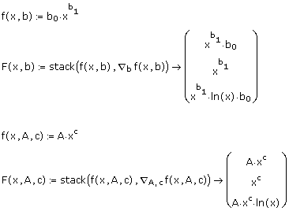

genfit(vx,vy,vg,F) Returns a vector containing the parameters that make a function f of x and n parameters u1...un best approximate the data in vx and vy. The genfit function employs an optimized version of the Levenberg-Marquardt method for minimization by default. While frequently faster and less sensitive to poor guess values, this implementation may fail to converge well on problems with many local minima, such as rational functions. It is also more sensitive to incorrect derivative vectors. The optimized method allows you to solve using numerical approximations for the parameter derivatives. To change methods, right-click on the genfit function and select the desired method from the menu.
Arguments:
vx and vy are vectors of real data values of the same length, corresponding to the x and y-values in the data set. There must be at least as many data points as parameters.
vg is an n-element vector of guess values for the parameters, or, if n = 1, vg is a scalar.
F(x,u) is a fitting function f(x,<parameter list>), where x is the independent variable, and u is either a vector of parameters or individual parameter names. These equations are both valid representations for a fitting function:
f(x,b):=b0·xb1 and f(x,A,c):=A·xc
Note that you provide just the name of the fitting function, without any arguments, to genfit.
n is a positive integer. In the case of non-vectorized parameters, there is a limit of 9 individual names.
Gradient Operator
To improve the convergence and possibly the accuracy of genfit, you can represent F as an n + 1 vector of functions, in which the first entry is the fitting function f, and the remaining entries are the partial derivatives of f with respect to the n parameters. You can create the vector F using the gradient operator, which computes the partial derivatives of f, and the vector function stack. The following shows how to create F for the examples above:

Notes:
Provide just the name of the fitting function or vector of functions, without any arguments, to genfit.
If you are using just the fitting function and allowing genfit to calculate the parameter partial derivatives numerically, you must use the Optimized Levenberg-Marquardt option.
If genfit has trouble converging, you may wish to try the alternative Levenberg-Marquardt method, other guess values, or scaling your data so that all parameters are of a similar order of magnitude. As with all numerical solution techniques, nonlinear problems are highly sensitive to guess values. You may wish to try plotting your fitting function with the guess values to refine them before using genfit. The Optimized Levenberg-Marquardt method is more sensitive to errors in the supplied algebraic derivatives. If this method is failing, you should check the derivative expressions.
All older-version worksheets in Mathcad default to the non-optimized Levenberg-Marquardt version to maintain consistency with previous results.
To further analyze your data, you can apply other statistics functions for data analysis. To apply constraints to the parameter solutions, you can use Minerr in a Solve Block.